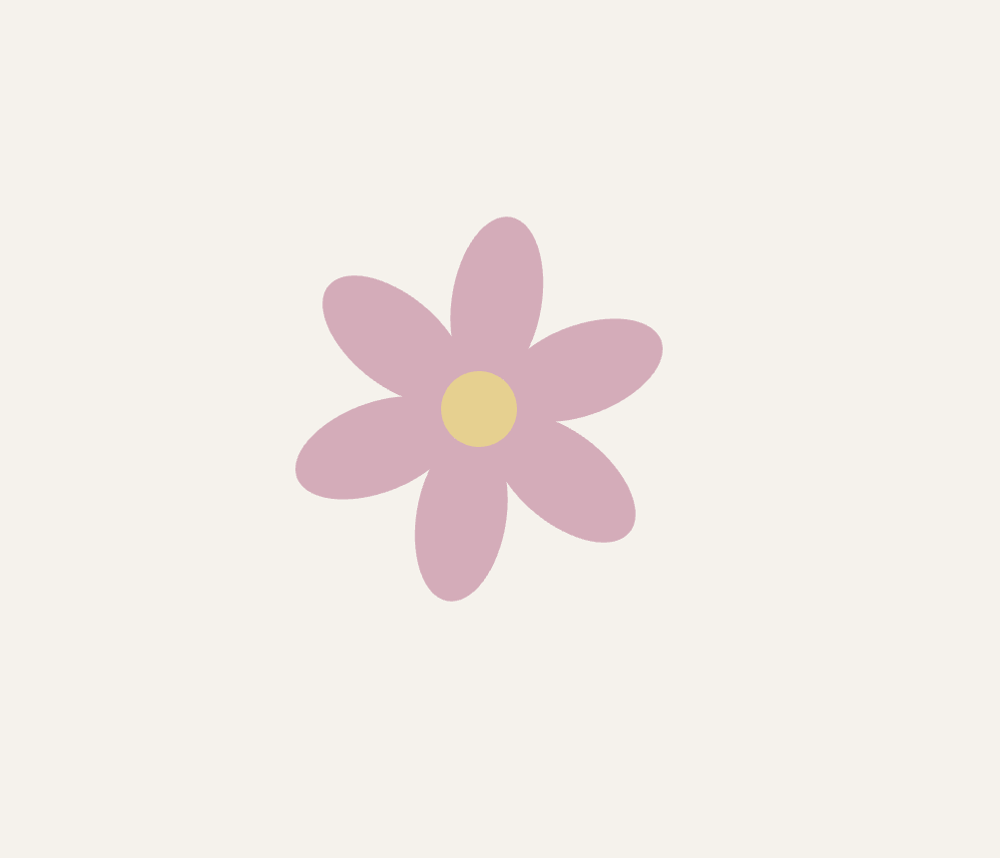
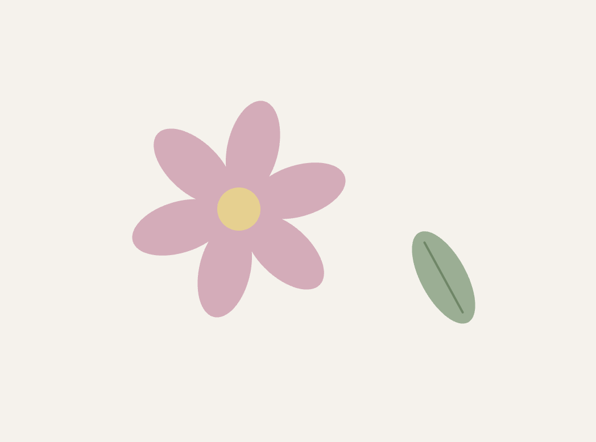
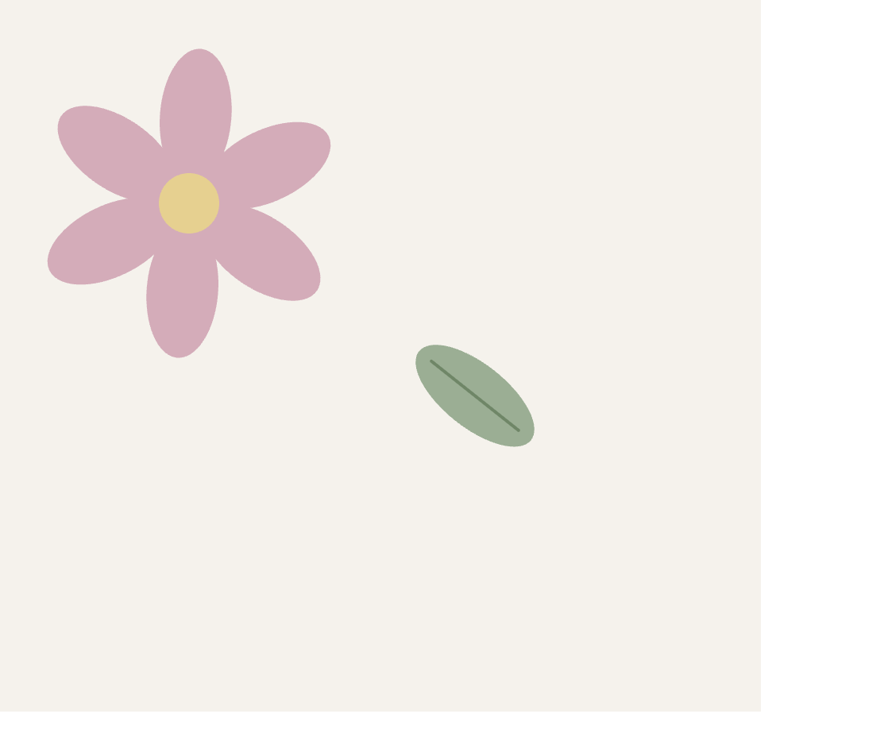
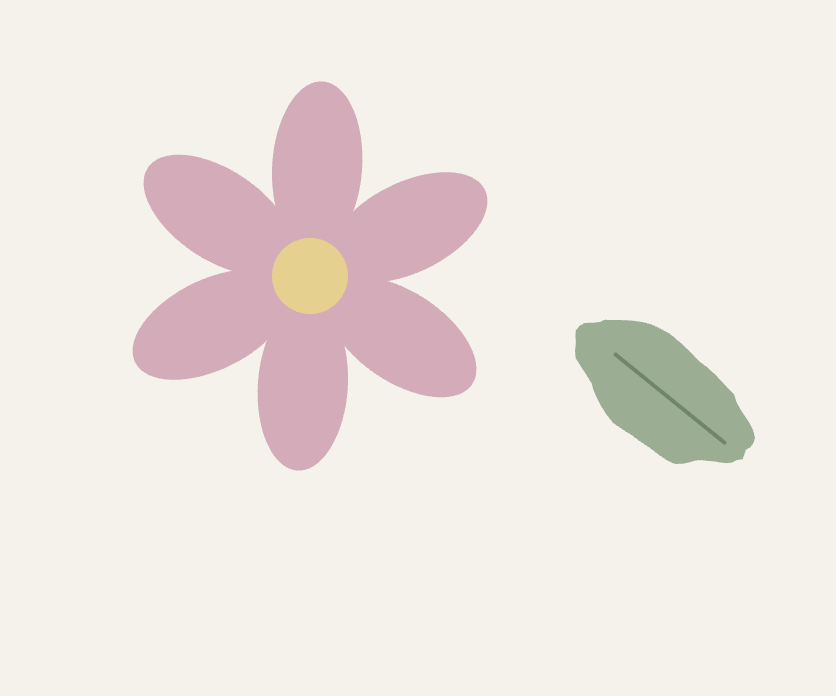
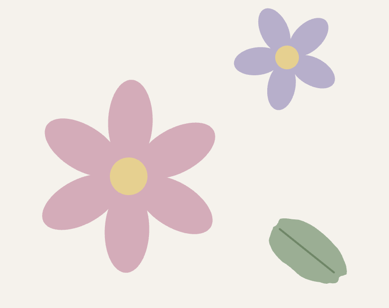
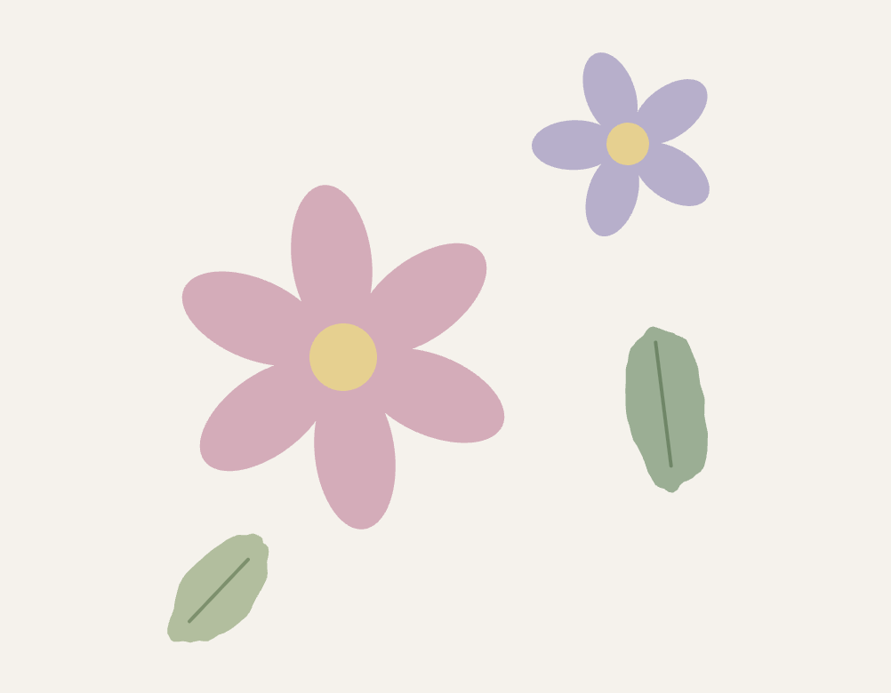

Flowers and Leaves
I wanted to make a small animation with soft colors. The flowers rotate while the leaves float and sway at different speeds.
Final Animation
Process
Step 1

I started with a pink flower made from six ellipses. I used rotate() to make the whole flower turn.
Step 2

I moved the flower to the left and added a green leaf. I used sin() to move the leaf up and down.
Step 3

I added a swaying motion to the leaf. The swaying and floating use different speeds, so they do not move together exactly.
Step 4

The leaf looked too much like a perfect oval. I used noise() to make its outline slightly uneven.
Step 5

I added a smaller purple flower. It turns in the opposite direction and more slowly than the pink one.
Step 6

I added a smaller leaf near the bottom to balance the layout. Its floating and swaying follow a different rhythm from the larger leaf.